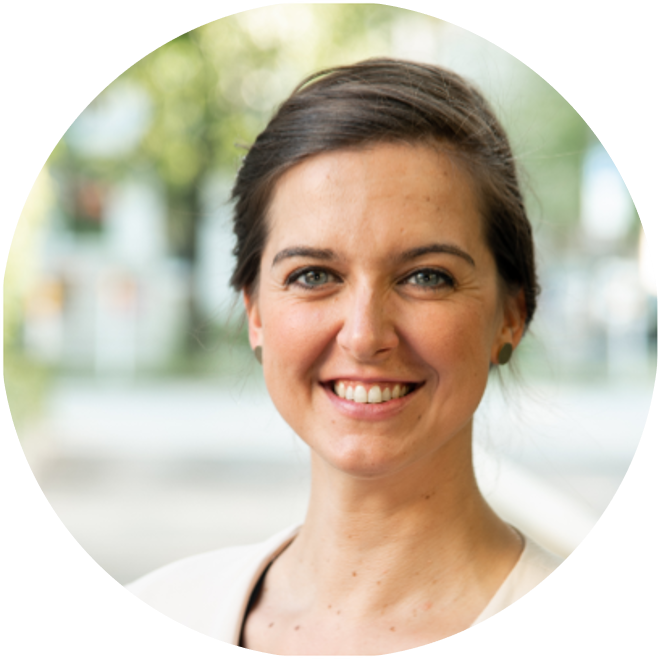
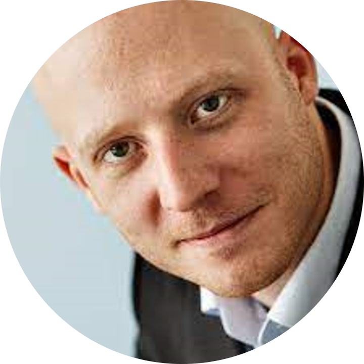

Hybrid networking
Monday 11 September, 13:15-14:15
In person and online participants will get to know each other in two rounds of speed-networking discussions in small groups, each with a 360 degrees camera-microphone.
R
Nicklas Hafiz, Felix Henninger
 Monday 11 September, 14:30-16:30
Monday 11 September, 14:30-16:30
You will learn the basics of the R programming language for data wrangling in the RStudio environment. Basic R knowledge is needed for the rest of the course.
M.Sc. Nicklas Hafiz, researcher at the Institute for Quality Development in Education of the Humboldt University of Berlin will be your instructor. Felix Henninger, PhD student in Statistics, will facilitate the session.
Julia
Aaron Peikert, Maximilian Ernst, Moritz Ketzer

 Monday 11 September, 14:30-16:30
Monday 11 September, 14:30-16:30
For selected participants who already know the basics of R, there will be the opportunity to learn the basics of the Julia programming language through a facilitated self-paced tutorial. Depending on the number of attendees from the summer school planned for this workshop, we may open it to public registration (with priority to LMU members). If so, it will be advertised on the LMU Open Science Center mailing list.
A team from the Max Planck Institute for Human Development and Max Planck UCL Centre for Computational Psychiatry and Ageing Research in Berlin will instruct this workshop: Dr Aaron Peikert, post-doctoral fellow, Maximilian Ernst, student assistant, and Moritz Ketzer, PhD student.
Preregistration: Why Not, How
Malika Ihle
 Tuesday 12 September, 13:13-15:15
Tuesday 12 September, 13:13-15:15
In this workshop, we will review what detailed information preregistrations and registered reports should contain, and discuss collectively discuss the benefits and disadvantages of embracing such practices, as well as possible fear and concerns, in a structured academic debate. Finally, we will look into how to preregister in practice on the Open Science Framework, and practice the level of precision needed in each section of a preregistration template by peer-reviewing snippets.
Simulations of data and data analyses in R
Malika Ihle
Tuesday 12 September, 15:30-17:30
You will be guided through the What, Why, and How of simulations of data and data analyses. We will follow this self-paced tutorial: https://malikaihle.github.io/Introduction-Simulations-in-R/. The material covers the concept of power analyses for simple tests, how to check for false positive rates, and how simulations can help with preparing a preregistration. Basic knowledge of the R syntax is needed.
Version control with Git with RStudio
Malika Ihle, Felix Henninger, Pat Callahan
Wednesday 13 September, 13:15-16:15
In this facilitated self-paced tutorial, you will learn the basic concept of version control using RStudio as one of many possible GUI interfaces that can interact with Git. You will learn how to use version control for your own workflow (Git within RStudio with backup online on GitHub) and for collaborative coding (fork, clone, pull requests on Github). The self-paced tutorials can be found at: https://malikaihle.github.io/Introduction-RStudio-Git-GitHub/ and https://malikaihle.github.io/Collaborative-RStudio-GitHub/.
Dr Malika Ihle, LMU Open Science Center coordinator, Felix Henninger, PhD student in Statistics, and Pat Callahan, M.Sc. student in Epidemiology will co-facilitate this session.
Research Data Management plans
Laura Meier
Wednesday 13 September, 16:30-17:30
The planning of a research project and the management of one’s own data bring many advantages in everyday research. Laura Meier, from the RDM team of the LMU University Library, will present what to look for when creating a data management plan and how web-based tools such as the Research Data Management Organizer (RDMO) can be used to make work easier.
Quarto
Florian Pargent, Philipp Sckopke, Florian Kohrt, Lena Schiestel
   Thursday 14 September, 13:15-15:15
Thursday 14 September, 13:15-15:15
Quarto makes transparent and reproducible data analysis simple and fun. In a nutshell, Quarto lets you mix text written in markdown with chunks of executable code written in, e.g., R or Python. You can use it for interactive notebooks, and export to a large number of formats including HTML, PDF/LaTeX, Microsoft Word or PowerPoint, or even interactive websites. In this workshop, we cover the fundamentals, including the markdown syntax, code chunks and inline code, and the output formats available. We also go over citations, cross-referencing, and templating, which ultimately allow you to write academic papers entirely in Quarto.
A team of LMU psychologists will instruct this session: Dr Florian Pargent, and Dr Philipp Sckopke will create the material, and B.Sc. Florian Kohrt and Dipl.-Psych Lena Schiestel M.A. will facilitate the live session.
What’s next? Facilitated group discussion
Verena Heise
 Thursday 14 September, 16:30-17:30
Thursday 14 September, 16:30-17:30
Dr Verena Heise, Open Science Freelancer, will facilitate a discussion on how you can plan to integrate parts of this course into your research and the strategies you can put in place to best support yourself in reaching your goals, following the “Ten simple rules for implementing open and reproducible research practices after attending a training course” (https://doi.org/10.1371/journal.pcbi.1010750).
Systematic reviews
Sofija Vojvodic
 Friday 15 September, 13:15-15:15
Friday 15 September, 13:15-15:15
Sofija Vojvodic, Research Fellow of the Berlin Institute of Health, will present systematic review methods and how it can be applied broadly across different fields.
How to use the Open Science Framework
Malika Ihle
Friday 15 September, 15:30-17:30
Through a self-paced tutorial, you will learn to use the Open Science Framework infrastructure to centralise your research projects, connect your regular tools to it (e.g. GitHub, GitLab, Google Drive, Dropbox, Zotero, etc.), explore how to share and link your data, material, preregistration, and preprint to your published article.